Tratar os dados
Exporto relatórios do sistema de vendas, limpo os arquivos e cruzo vendas, margem, cliente, cidade e filial.
Desenvolvedor & Analista de Dados
Transformo planilhas e processos manuais em ferramentas que a equipe usa todos os dias: mapas de vendas, sistemas de gestão de tarefas e assistentes de IA que respondem perguntas sobre as bases da empresa.
Sobre mim
Trabalho no setor de peças de uma concessionária de máquinas agrícolas no Rio Grande do Sul. Meu dia passa por dados de vendas, compras e pela rotina de uma equipe que precisa saber o que fazer, até quando e com qual arquivo.
Comecei a programar para resolver problemas que eu mesmo enfrentava nesse trabalho. Uma planilha que ninguém conseguia ler virou um mapa de calor. Tarefas soltas no e-mail viraram um sistema com cronômetro e aprovação. Hoje entendo o dado e o problema do negócio, e construo a ferramenta que coloca a resposta na mão de quem decide.
Fora do trabalho, a música é o meu outro laboratório. O Harmony nasceu do meu próprio estudo de violão.
Dia a dia
Exporto relatórios do sistema de vendas, limpo os arquivos e cruzo vendas, margem, cliente, cidade e filial.
Transformo a análise em algo que se lê em segundos numa reunião: onde vendemos mais e onde a margem é melhor.
Distribuo e acompanho tarefas e compras programadas, confiro os arquivos de retorno e aprovo cada entrega.
Quando um trabalho manual aparece toda semana, ele vira ferramenta: um app, um script ou um assistente de IA.
Como eu trabalho
Habilidades
Leitura e limpeza de CSV e Excel de sistemas legados, padrão brasileiro de números e datas, agregações e mapas de calor.
Aplicações em React e TypeScript com Supabase: login, Postgres com RLS, arquivos, tempo real, testes e deploy com CI.
Pipelines de RAG que indexam planilhas e respondem perguntas em português, com troca automática de provedor.
Trajetória
Do primeiro protótipo a sistemas com banco de dados, segurança e testes.
Motor de solos reescrito, 354 testes e versão Android.
O TaskFlow vira o Fluxo: envio em lote, aprovações, calendário de compras, segurança por coluna e CI.
Primeira versão do sistema de tarefas: login, cronômetro e dashboard com Supabase.
Primeiro projeto de IA aplicada: RAG sobre planilhas com Python, Gemini e Groq.
Primeira ferramenta de dados usada no trabalho, com documentação técnica completa.
Primeiro protótipo em React. Virou a base do Harmony.
Ferramentas
Python, pandas, SQL, PostgreSQL, Excel, scikit-learn
React, TypeScript, Tailwind, TanStack, Recharts, Leaflet
Supabase, RLS, Realtime, Node, Capacitor
Vitest, ESLint, GitHub Actions
Gemini, Groq, RAG, Claude Code
Git, Vercel, Docker
Contato
Estou aberto a oportunidades como desenvolvedor ou analista de dados. Posso apresentar qualquer projeto ao vivo.
Projetos
Cada projeto nasceu de uma necessidade concreta do trabalho ou do estudo. Abra um para ver o problema, como funciona por dentro, as decisões técnicas e o que dá para medir.
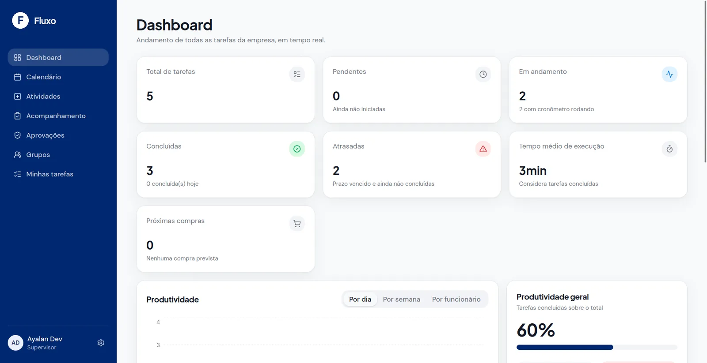
Full stackEm produçãoFluxoGestão de tarefas da equipe com cronômetro, envio em lote, aprovações e calendário de compras.Ver projeto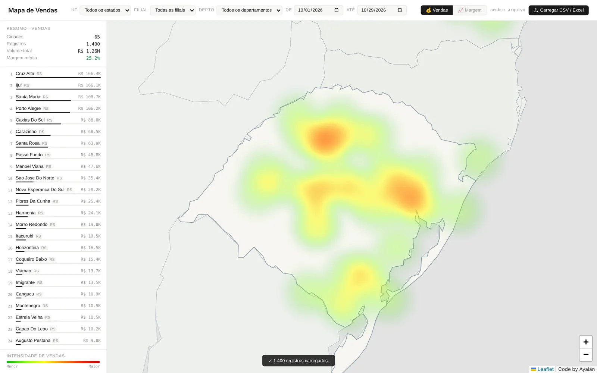
Análise de dadosUsado em reuniõesMapa de VendasA planilha de vendas de peças vira um mapa de calor interativo por cidade, com volume e margem.Ver projeto$ python executar_leitura_bases_v2.py
> Quais clientes têm maior volume?
buscando 8 trechos relevantes…
gemini-2.5-flash respondendo…
IA + dadosCódigo abertoSuperAgenteAssistente que lê as planilhas da empresa e responde perguntas em português com RAG.Ver projeto
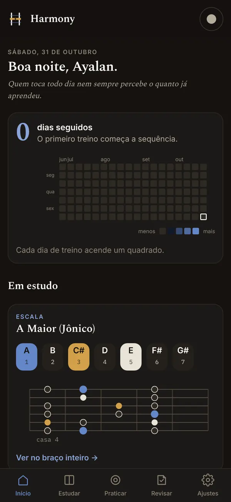
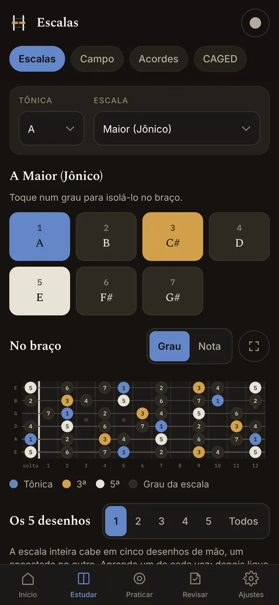
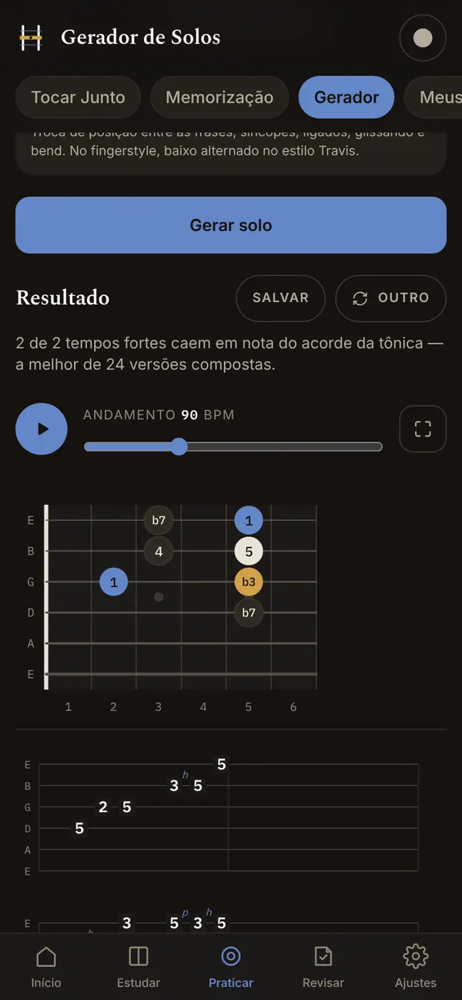
ProdutoWeb + AndroidHarmonyApp de estudo de violão com motor de teoria musical próprio, gerador de solos e 354 testes.Ver projetoSistema web de gestão de tarefas: o supervisor distribui atividades para uma pessoa, um grupo ou uma filial inteira, cada um executa com cronômetro e devolve o arquivo, e o supervisor aprova. Tudo atualizado em tempo real.
Telas do sistema · dados trocados por fictícios
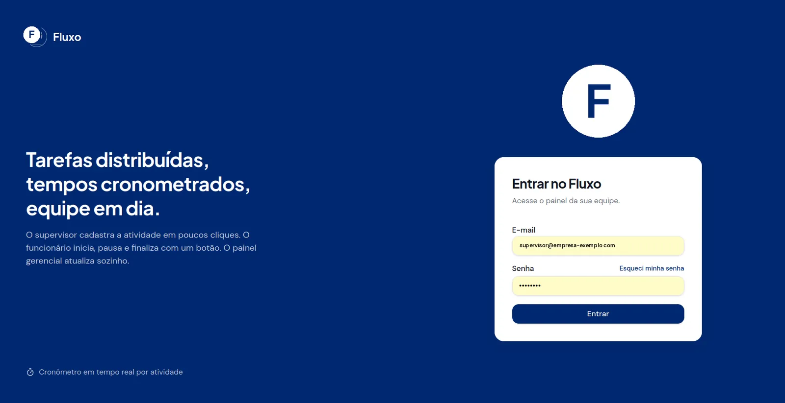
Capturas reais do sistema. Nomes de pessoas, e-mail, tarefas, arquivos e o logo da empresa foram trocados por dados fictícios.
contexto e problema
As tarefas da equipe circulavam por e-mail e planilha. O supervisor não sabia quem já tinha começado, quanto tempo cada atividade levava nem quem tinha devolvido o arquivo. Mandar a mesma tarefa para vinte pessoas significava vinte e-mails e vinte respostas para conferir à mão.
o que construí
como funciona
frontend
React 19 · TanStack Start (SSR) · TanStack Query · Tailwind · Radix · Recharts
cliente
supabase-js, a única porta de entrada para o backend
backend
Postgres com RLS · Auth · Storage privado · Realtime
decisões técnicas
O acesso é controlado por políticas RLS no Postgres. Um gatilho trava a atualização por coluna: o funcionário só altera status, tempo e observações.
A mesma função pode_enviar_retorno() é usada pela política do banco e pela tela, para as duas nunca discordarem.
O app fala com o backend só pelo supabase-js. Migrar para um servidor próprio é trocar duas variáveis de ambiente, sem reescrever telas.
A recuperação de senha mostra sempre a mesma mensagem, exista ou não o e-mail, para evitar enumeração de contas.
desafios que resolvi
Permissão que eu não pedi
O Supabase concede escrita por padrão em toda tabela nova. Na tabela de downloads, que só deve ser gravada por uma função segura, foi preciso revogar a escrita explicitamente.
Upload antes da linha existir
O app sobe o arquivo antes de gravar o registro do anexo. A política do Storage passou a ler a atividade pelo prefixo do caminho do arquivo, em vez de depender da linha.
Abuso de login e upload
Limite de requisições no gateway: 20 logins, 5 cadastros e 30 uploads por minuto, sem tocar no código do app.
Banco reproduzível
Um script SQL único e idempotente cria tudo, e scripts de verificação conferem cada política e função, respondendo OK linha a linha.
próximos passos
Aplicação que transforma a exportação de vendas de peças em um mapa de calor interativo do Rio Grande do Sul e estados vizinhos. Arrasta o arquivo, confere as colunas e o mapa aparece. Roda inteiro no navegador.
Demonstração com base fictícia
Base de teste gerada com as mesmas 51 colunas da exportação real do sistema. Clientes, valores, filiais e marcas são inventados.
contexto e problema
O sistema exporta as vendas como uma planilha de 49 colunas e milhares de linhas. Em reunião, ninguém conseguia responder rápido onde vendemos mais, onde a margem é melhor e quais clientes e peças puxam cada cidade.
o que construí
como funciona
decisões técnicas
Sem servidor, sem banco e sem instalação. Os dados de venda nunca saem do computador de quem abre o arquivo.
Mais de 200 municípios mapeados à mão, com busca normalizada sem acento e em maiúsculas, para funcionar sem API externa.
Raio, desfoque e opacidade são recalculados a cada zoom: afastado mostra manchas suaves, aproximado mostra pontos definidos.
Cada cidade vira um valor entre 0 e 1 pela fórmula (valor − mínimo) / (máximo − mínimo), comparável em qualquer filtro.
desafios que resolvi
O upload que não fazia nada
Um ternário duplicado gerava um erro de sintaxe que impedia todo o JavaScript de rodar, sem nenhuma mensagem visível. Achei e documentei a causa.
Filtros que se duplicavam
Preencher a data disparava o evento de mudança, que recarregava tudo e repetia as opções. Corrigi com uma trava durante o preenchimento e limpando o \r dos arquivos do Windows.
Código no lugar do nome
A coluna de código do produto vinha antes da descrição e era escolhida no lugar dela. A detecção passou a respeitar a ordem de prioridade dos nomes.
Dados de sistema legado
Arquivos em Latin-1, códigos exportados como fórmula =("…") e linhas de total misturadas aos dados, todos tratados na leitura.
próximos passos
Assistente que lê as bases da empresa em CSV e Excel e responde perguntas em português, como “quais clientes têm maior volume de vendas?”, usando só o conteúdo das próprias planilhas.
Exemplo de uso · dados ilustrativos
$ python vetorizar_bases.py lendo Dados Base/ … 2 planilhas removendo duplicados por hash … ok índice salvo em index_vetorial/chunks.json $ python executar_leitura_bases_v2.py --pergunta "Quais filiais venderam mais filtros em outubro?" buscando trechos relevantes (TF-IDF local) … 8 trechos montando prompt com o contexto recuperado … gemini-2.5-flash … limite de cota atingido fallback → groq llama-3.3-70b … ok Resposta: Com base nos registros encontrados, a filial Norte lidera em filtros no período, seguida pela filial Serra. A resposta considera apenas os trechos recuperados das bases.
O texto acima ilustra o fluxo do script com uma pergunta e uma resposta inventadas, sem dados reais.
contexto e problema
Para responder uma pergunta simples sobre vendas era preciso abrir várias planilhas grandes, filtrar e cruzar tudo à mão. Mandar a planilha inteira para uma IA também não serve: é grande demais e a resposta perde o foco.
como funciona
decisões técnicas
O ranking dos trechos usa TF-IDF no próprio computador. A API de IA só é chamada uma vez, na hora de responder.
O prompt leva só os trechos recuperados e pede que a resposta se baseie neles, o que reduz respostas inventadas.
Vetores TF-IDF, compatibilidade com embeddings do Gemini e, se nada estiver disponível, sobreposição de palavras-chave.
As chaves de API ficam num arquivo .env que não vai para o repositório, com um modelo de exemplo versionado.
desafios que resolvi
Limite de cota da API
Quando o Gemini atinge o limite ou fica indisponível, o script tenta de novo e troca para o Llama 3.3 no Groq, sem interromper a pergunta.
Planilhas grandes e repetidas
Bases de dezenas de megabytes com linhas repetidas. A remoção de duplicados por hash diminui o índice e a busca fica mais limpa.
próximos passos
App de estudo de violão que conecta escala, campo harmônico, acordes e sistema CAGED, com trilhas para tocar junto, um gerador de solos por regras musicais e revisão de teoria por repetição espaçada.
Telas do app no celular
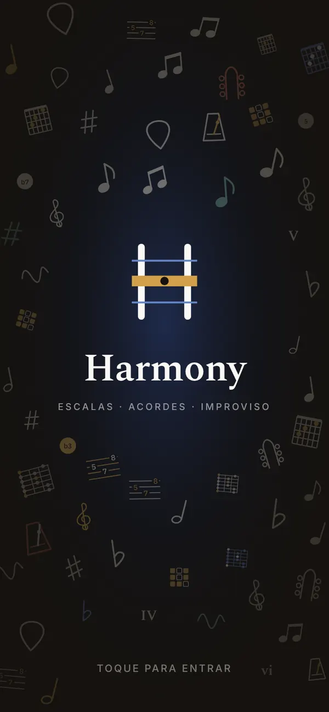
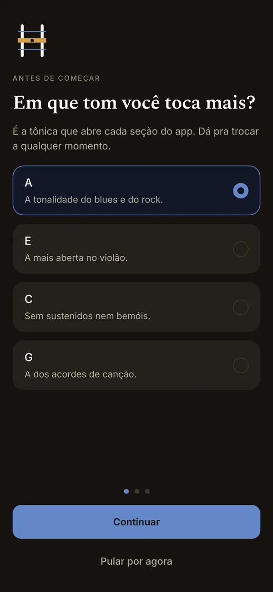
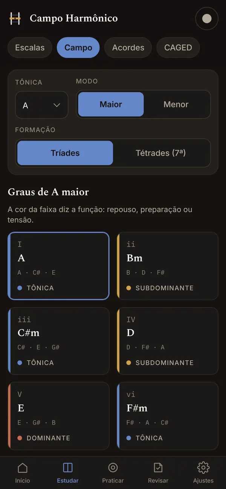
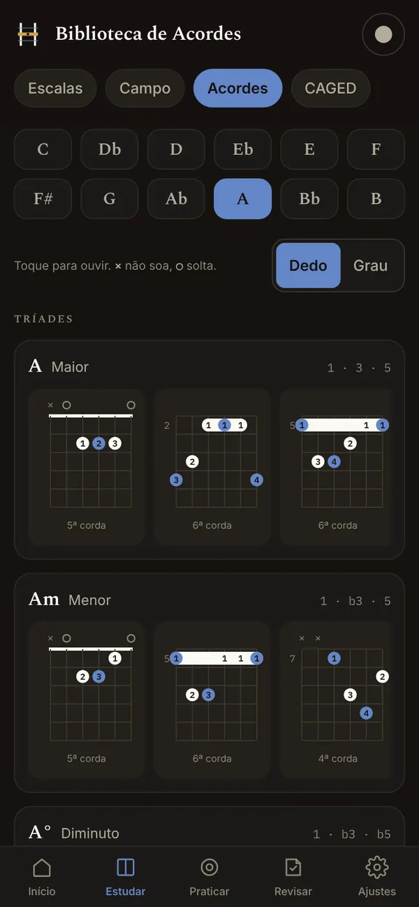
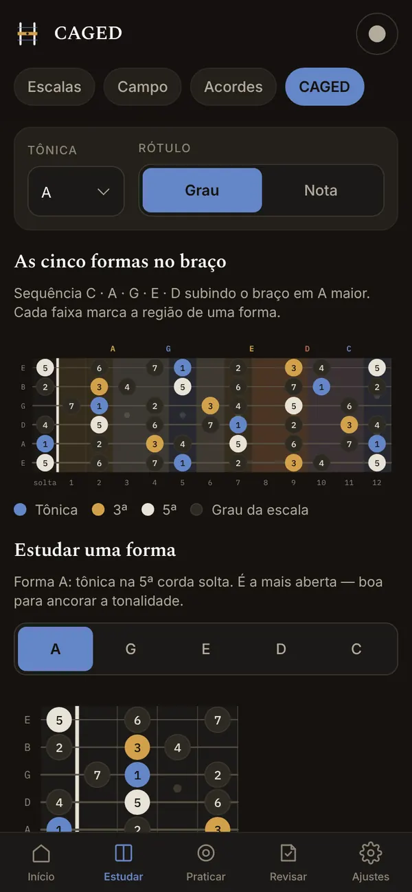
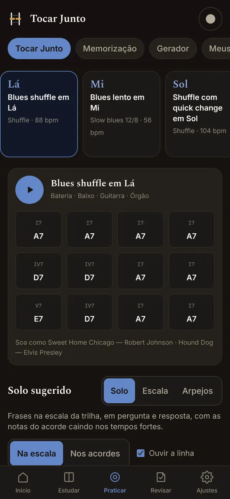
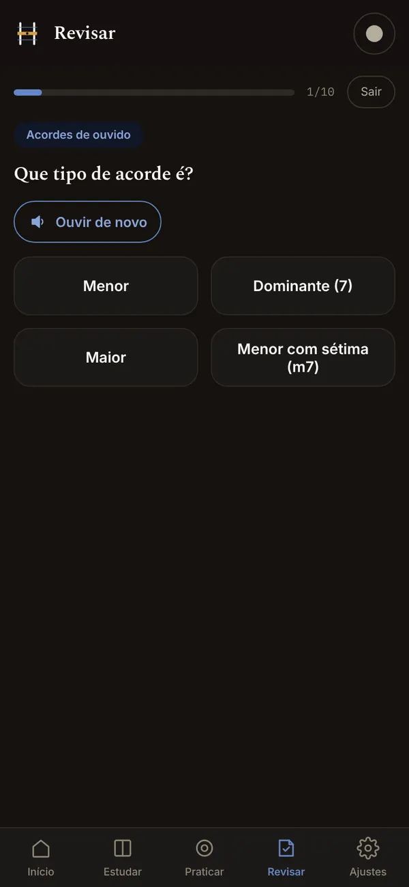
Capturas do app em execução, na ordem de uso: do primeiro acesso à revisão. Arraste para o lado para ver todas.
contexto e problema
Os apps de violão mostram acordes soltos. Quem quer improvisar precisa cruzar vários assuntos ao mesmo tempo: a escala desenhada no braço, o campo harmônico que a acompanha, as formas do CAGED e o ouvido. O Harmony junta isso num lugar só.
o que construí
desafio principal: o gerador de solos
O relato de uso era claro: o solo gerado ficava parado no mesmo traste e soava estranho. A causa estava no motor, que trabalhava com classes de altura de 0 a 11. Nesse espaço, subir um grau a partir da 7ª voltava para a tônica uma oitava abaixo, e a linha girava em vez de subir. Reescrevi o motor com alturas reais e regras de melodia, e medi 500 solos antes e depois:
| medida em 500 solos | antes | depois |
|---|---|---|
| notas seguidas na mesma casa | 61,1% | 13,5% |
| salto médio entre notas | 8,82 semitons | 3,47 semitons |
| movimento por grau conjunto | 1,5% | 43,6% |
| durações diferentes usadas | 1 | 4 |
| notas com articulação | 0% | 34,8% |
decisões técnicas
Cada frase inteira é escolhida comparando dezenas de versões, e a melhor fica. A tela mostra as etapas enquanto isso acontece.
Tônica em índigo, 3ª em âmbar, 5ª neutra e blue note em ferrugem, em todos os modos do app.
O mesmo projeto React vira app Android com Capacitor, sem reescrever telas.
354 testes cobrem o motor de teoria, o gerador, a revisão e as telas, rodando a cada mudança.
próximos passos
Classificador + TF-IDF treinados em Python · roda no seu navegador